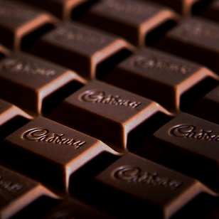

今日紹介するレシピは、ひと手間加えたまろやかカレーライスです。
カレーを煮込む際にあるものを加えることでまろやかな風味に仕上げます。
材料一覧
 4人前 4人前 |
||
| ルー（市販） | 1/2箱 | |
| じゃがいも | 4個 | |
| 玉ねぎ | 2個 | |
| ニンジン | 2本 | |
| 鶏肉 | 250グラム | |
| サラダ油 | 大１ | |
| 水 | 850ml | |
| チョコレート | お好み | |

コクを出すために煮込んでいる途中でお好みの量のチョコレートを加え、混ぜながら溶かしましょう。
チョコレートではなくココアや牛乳、ミルキーを入れても美味しく出来上がります。